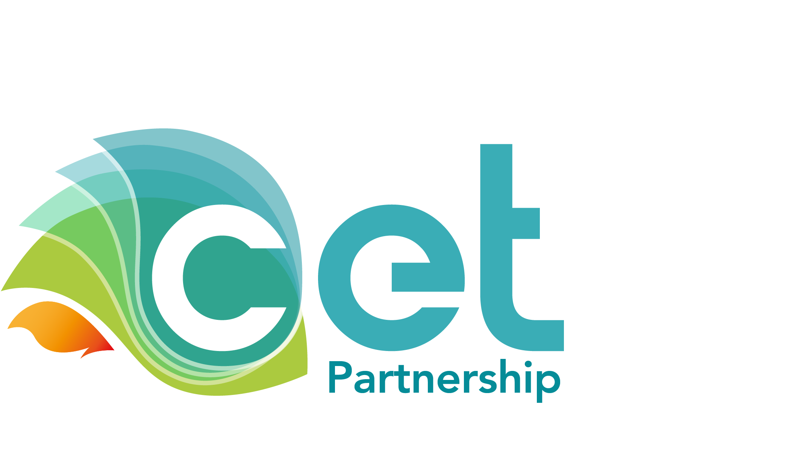
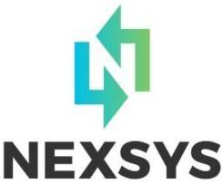

NU-ACTIS:
The Clean Energy Transition Partnership project NU-ACTIS explores advanced control solutions for inverter-dominated
power systems. The project comprises eight partners from industry and academia and is coordinated by the
Research Institutes of Sweden (RISE). UCD's participation is funded by the Sustainable Energy Authority of Ireland (SEAI).
I am a principal investigator in the project and UCD is the leader of its first work package.

NexSys:
Next Generation Energy Systems (NexSys) is an all-island, multidisciplinary energy research project
in Ireland that defines pathways to a net zero energy system. The project is funded by the Science Foundation
Ireland (SFI) Strategic Partnership Programme (grant. no. 21/SPP/3756, 2022-2026), as well as by nine industry co-funding
partners and one philanthropic donor. I have been a funded investigator of NexSys since the beginning of 2025,
working on the Energy Systems strand of the project.

NCCR Automation: The NCCR (National Centre of Competence in Research) Automation (grant no. 51NF40 18054) is a project funded
by the Swiss National Science Foundation. The project investigates new approaches to the control of complex automated systems and implements them in concrete applications, aiming at strengthening Switzerland's role in automation and control technology. I was a member of NCCR Automation from May. 2022 to Mar. 2023. During that period I was fully funded by the project. My primary task was to develop scalable analytical and numerical methods that contribute towards an end-to-end automation of future power systems.

edgeFLEX:
The EU H2020 project edgeFLEX (grant no. 883710, 2020-2023)
explored solutions that enable the provision of control services to the grid by Virtual Power Plants (VPPs),
i.e., by control centres that aggregate heterogeneous distributed energy resources. edgeFLEX comprised ten
partners from industry and academia and was coordinated by
Ericsson GmbH. I was a member of the edgeFLEX team from Oct. 2020 to Apr. 2022,
running UCD's participation. During that period I
was fully funded by the project. My primary task
was to develop frequency control concepts for VPPs and Energy Communities.

AMPSAS:
The Science Foundation Ireland (SFI) Program AMPSAS
(Advanced Modeling for Power System Analysis and Simulation, grant no. SFI/15/IA/3074, 2016-2021)
focused on the development of analytical and computational tools to understand and efficiently
design ever-changing power systems and smart grids, through model-based approaches. I was a member
of the AMPSAS team from Sep. 2017 to Oct. 2020, studying
problems on power system stability analysis, automatic control, and
numerical simulations. My PhD scholarship was funded by the project.